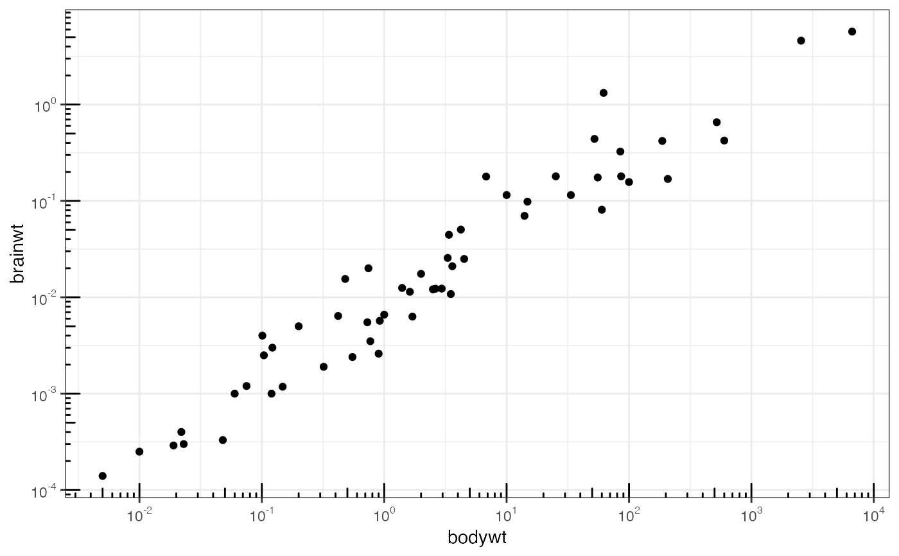
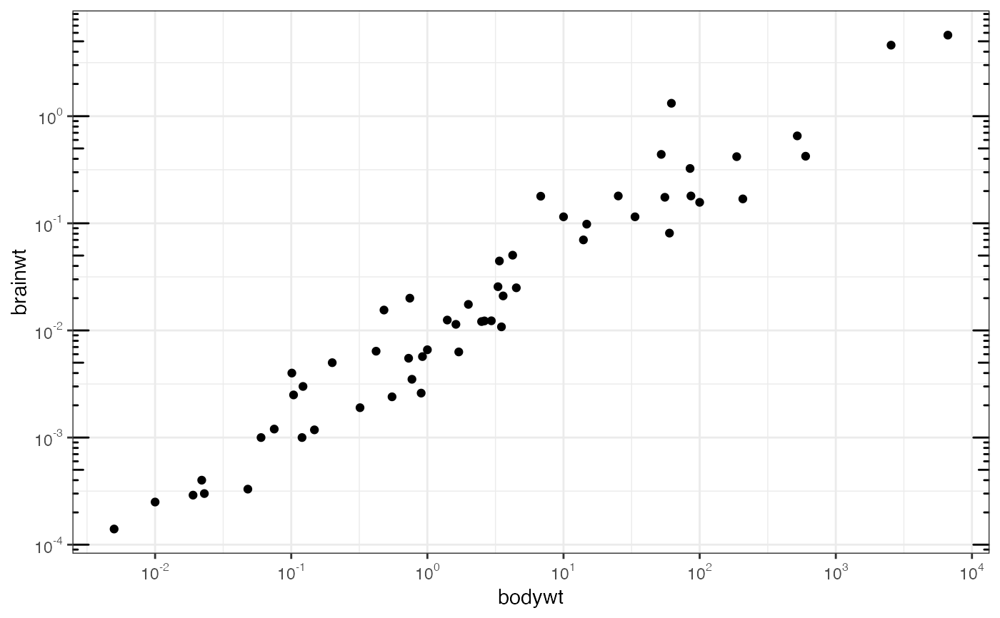
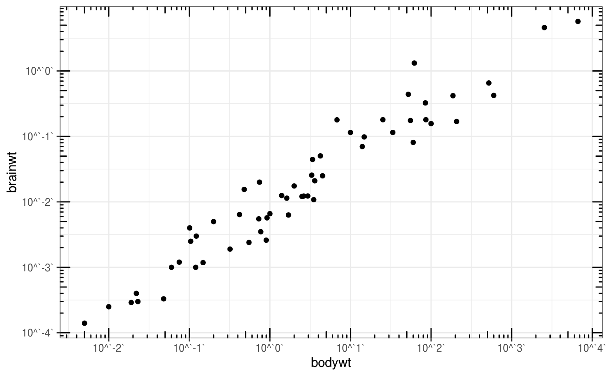
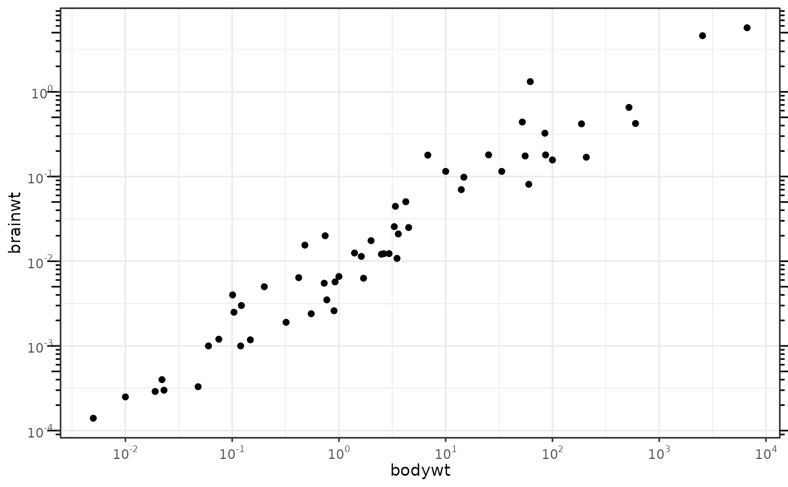
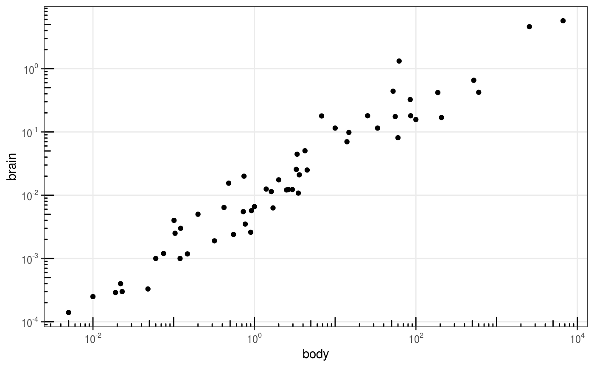
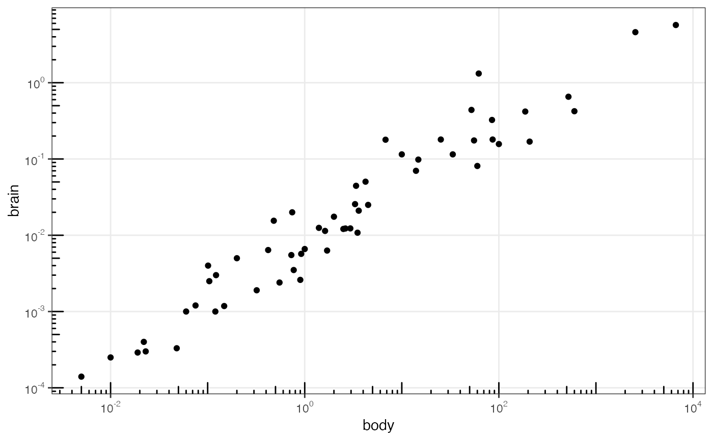
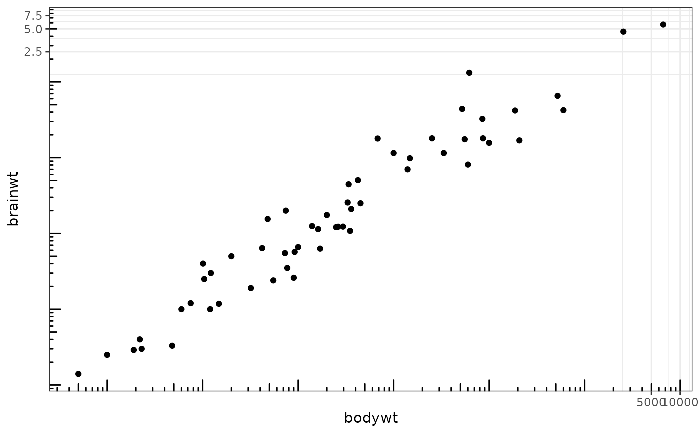
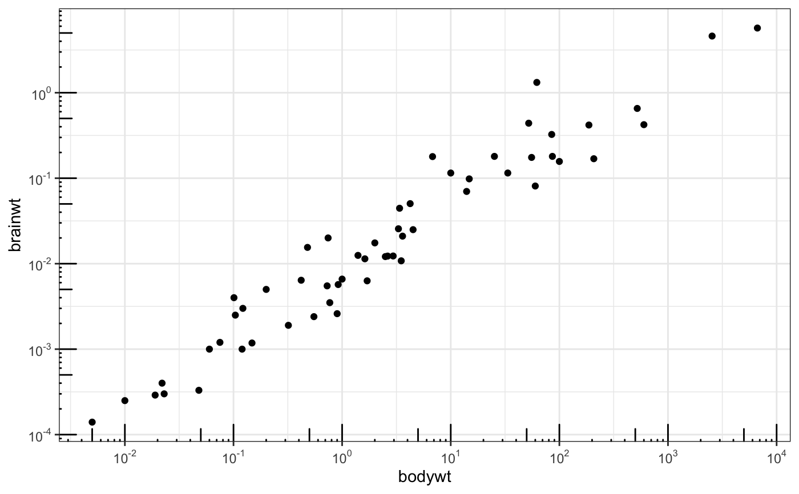

This annotation adds log tick marks with diminishing spacing. These tick marks probably make sense only for base 10.
annotation_logticks( base = 10, sides = "bl", outside = FALSE, scaled = TRUE, short = unit(0.1, "cm"), mid = unit(0.2, "cm"), long = unit(0.3, "cm"), colour = "black", size = 0.5, linetype = 1, alpha = 1, color = NULL, ... )
| base | the base of the log (default 10) |
|---|---|
| sides | a string that controls which sides of the plot the log ticks appear on.
It can be set to a string containing any of |
| outside | logical that controls whether to move the log ticks outside
of the plot area. Default is off ( |
| scaled | is the data already log-scaled? This should be |
| short | a |
| mid | a |
| long | a |
| colour | Colour of the tick marks. |
| size | Thickness of tick marks, in mm. |
| linetype | Linetype of tick marks ( |
| alpha | The transparency of the tick marks. |
| color | An alias for |
| ... | Other parameters passed on to the layer |
scale_y_continuous(), scale_y_log10() for log scale
transformations.
coord_trans() for log coordinate transformations.
# Make a log-log plot (without log ticks) a <- ggplot(msleep, aes(bodywt, brainwt)) + geom_point(na.rm = TRUE) + scale_x_log10( breaks = scales::trans_breaks("log10", function(x) 10^x), labels = scales::trans_format("log10", scales::math_format(10^.x)) ) + scale_y_log10( breaks = scales::trans_breaks("log10", function(x) 10^x), labels = scales::trans_format("log10", scales::math_format(10^.x)) ) + theme_bw() a + annotation_logticks() # Default: log ticks on bottom and lefta + annotation_logticks(sides = "lr") # Log ticks for y, on left and righta + annotation_logticks(sides = "trbl") # All four sidesa + annotation_logticks(sides = "lr", outside = TRUE) + coord_cartesian(clip = "off") # Ticks outside plot# Hide the minor grid lines because they don't align with the ticks a + annotation_logticks(sides = "trbl") + theme(panel.grid.minor = element_blank())# Another way to get the same results as 'a' above: log-transform the data before # plotting it. Also hide the minor grid lines. b <- ggplot(msleep, aes(log10(bodywt), log10(brainwt))) + geom_point(na.rm = TRUE) + scale_x_continuous(name = "body", labels = scales::math_format(10^.x)) + scale_y_continuous(name = "brain", labels = scales::math_format(10^.x)) + theme_bw() + theme(panel.grid.minor = element_blank()) b + annotation_logticks()# Using a coordinate transform requires scaled = FALSE t <- ggplot(msleep, aes(bodywt, brainwt)) + geom_point() + coord_trans(x = "log10", y = "log10") + theme_bw() t + annotation_logticks(scaled = FALSE)#> Warning: Removed 27 rows containing missing values (geom_point).# Change the length of the ticks a + annotation_logticks( short = unit(.5,"mm"), mid = unit(3,"mm"), long = unit(4,"mm") )